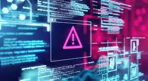
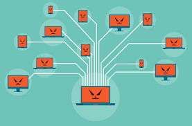

COS`È UNA MINACCIA INFORMATICA?
una minaccia informatica è un codice eseguibile, con la capacità di riprodursi, che penetra in un qualsiasi tipo di file e si diffonde nel momento in cui i file vengono copiati e inviati.
Questi codici poi avviano una routine per visualizzare messaggi o immagini e, molto spesso, danneggiare file e causare danni di varia natura.
GLI ATTACCHI INFORMATICI

Il tasso di criminalità informatica aumenta ogni anno. Spesso gli hacker cercano di ottenere un riscatto: il 53% degli attacchi informatici ha causato danni di una soglia di circa 475.316,15€
Cosa è un attacco DDoS (distributed denial-of-service)?
Un attacco DDoS è tecnicamente la versione distribuita del Denial of Service (DoS), che ha lo scopo di interrompere i servizi di un`azienda. I malintenzionati utilizzano enormi volumi di traffico per sovraccaricare i normali carichi di lavoro, server o interconnessioni di rete per renderli inutilizzabili.
Anonymous è un gruppo che comprende singoli utenti o addirittura più utenti (comunità) online che possono agire per conto loro, quindi individualmente oppure in massa, in veste anonima per ottenere un obiettivo comune e concordato.
Questo fenomeno digitale è nato nel 2003 e viene identificato come l’insieme delle operazioni che gli attivisti applicano in nome della difesa e della libera trasmissione delle informazioni e delle idee.
Queste azioni possono rimanere confinate a scherzi di cattivo gusto, oppure possono diventare dei veri e propri attacchi DDoS finalizzati a danneggiare aziende ed enti. Si tratta di una protesta che si concretizza principalmente attraverso la pubblicazione di informazioni riservate acquisite tramite incursioni informatiche (exploit, phishing e metodi di ingegneria sociale o blocco temporaneo delle attività online del bersaglio tramite tecniche di DDoS).
COS`È UNA BOTNET?

Una botnet è una rete di dispositivi influenzati da software non sicuri, ad esempio un virus.
Gli hacker possono controllare una botnet come gruppo, senza che il proprietario ne sia consapevole, con l`obiettivo di aumentare la portata dei loro attacchi.
Spesso, una botnet viene utilizzata per sopraffare i sistemi in un attacco DDoS.
Vediamo ora le più frequenti e comuni di queste minacce:
La prima da citare è la più classica: Il Virus. Il suo comportamento è molto generico, infetta un sistema informatico e si riproduce in esso, per poi passare al prossimo. Simili ai virus sono i Worm che possono autoreplicarsi anche senza l’ausilio di file. Un’altra minaccia molto comune sono i Trojan Horse, che si nascondono all’interno di un altro programma innocuo.
Il Criptolocker, il principale imputato dell’attacco hacker è un programma che cripta ogni dato di un sistema, rendendoli illeggibili o inaccessibili ai proprietari.
Questa sua natura, infatti lo rende lo strumento più utilizzato dagli hacker per chiedere riscatti.
Il Keylogger, è uno dei malware più pericolosi.
Questo software infatti, registra tutte le sequenze di tasti digitate da un utente e le invia ad un server per poi essere recuperate da un hacker. Molto utilizzato nello spionaggio industriale.
Insieme troviamo i Pharming ed i Phishing, solo apparentemente innocui: Il primo si serve di siti o server falsi che ha l’intento di ingannare i navigatori e capire i loro dati sensibili;
il secondo, ovvero il Phishing invece, sfrutta mail che simulano nell’aspetto e contenuto messaggi legittimi di fornitori o servizi, contenenti link falsi dove l’utente deve inserire dati sensibili.
Alla fine troviamo gli Spyware, ovvero tutti quei programmi che eseguono operazioni senza autorizzazione.
Spesso questi programmi non sono dannosi per il sistema, limitandosi ad aprire pagine web per aumentarne le visite o aprendo finestre con messaggi pubblicitari.